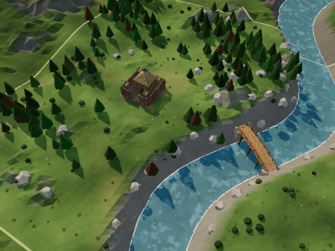
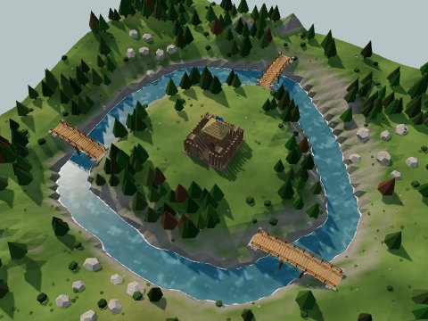
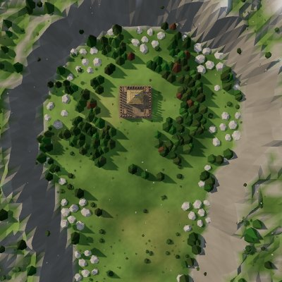

Day 1 of 5
Night in 5:00
20
Skip day
0
0
0
0
0
Town log
Admin
testing tools
Fill all to 9,999
Finish all building
Instant build and upgrades
+5 villagers
Skip to night
Gallery
1×
Paused
Skip
Pick a building
Economy
Defences
Decor
Gallery
Turn
Doors
Walk
Back
Medieval Town Defense
Choose map

Meadow

River isle

Mountain pass
Play again